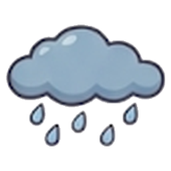
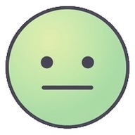

① 날씨를 켠 사람: 상태는 작게 · 날씨를 크게
지금
나
💼 근무 중
· 주간 19:00 끝
퇴근길에 비 와요
우산 챙기세요 · 오후 5시부터
출근
6°
→ 퇴근

12°

② 날씨를 안 켠 사람: 상태를 크게
지금
나
💼 근무 중
주간 · 19:00 끝 · 퇴근까지 4시간 20분
③ 쉬는 날 (날씨 켠 사람)
지금
나
🏖 휴무
· 내일 주간 07:00 시작
맑은 날이에요
트렌치코트 입으세요
오전
9°
→ 오후
16°